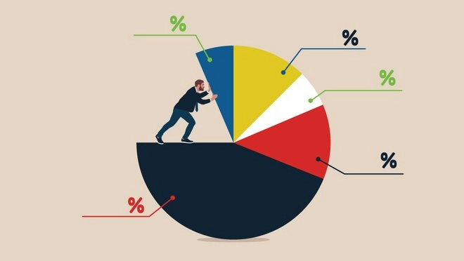

Programming & Databases
- Python (focused on data analysis)
- Web scraping with Python
- SQL for data extraction and validation
- Databases: SQLite, PostgreSQL, MySQL, Oracle, MongoDB, Cassandra
Development of data-driven solutions for business problems using public datasets from Data Science competitions. Projects cover the full lifecycle, from business problem definition and data exploration to model development and deployment in production using cloud platforms.
Experience ensuring the reliability and performance of IT systems, with a strong focus on SaaS environments. Skilled in troubleshooting complex issues using SQL, APIs, and log analysis, as well as collaborating with engineering teams to resolve incidents efficiently. Developed strong communication, analytical thinking, and problem-solving skills in high-pressure environments.
I used Python, Statistics, and supervised Machine Learning techniques to forecast the revenue for the next six weeks for all Rossmann stores, helping the company’s CFO make decisions about how much budget should be allocated to each store for renovations.
To help the sales team maximize time and company resources, we developed a predictive model that returns a ranked list of customers most likely to purchase the new insurance product offered by Cover. This allows us to focus efforts on customers with the highest probability of conversion.

Identifying customers eligible for the Insiders program, a loyalty program for those who contribute the most to the company’s revenue. Additionally, other customer segments and their characteristics were identified to help the business team define the best engagement strategy to further increase revenue.
Identification of properties priced below the market average and definition of the optimal resale price through exploratory data analysis in Python.
Identification of customers most likely to churn and optimization of strategies to retain the most profitable customers for the bank.
Feel free to reach out.